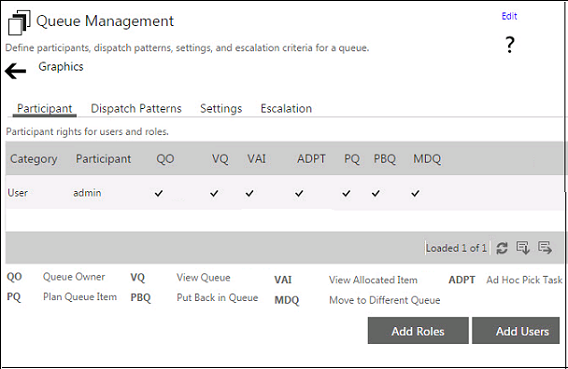

No
Configure the different settings for a new queue or edit the settings for an existing queue in this view of the Queue Management window. You can access these settings using the different tabs in the window. The first tab, Participants, is selected by default.
The Participants tab displays a list of all the existing participants along with their access rights. The following image shows Participants tab of the Queue Management window:

Adding Participants
Click Add Users to add a new participant to the queue. The Add Users window opens where you can add new users
You can specify a search string to Search for resources from the desired provider. The resources matching the search parameter are extracted by the resource handler and displayed in the Available Resources list. You can select the resource names from this list and click the [ > ] button to move it into the Selected Resources list. You can click the [ >> ] button to move all the available resources into the selected resources list. After selecting the resources click Update to save the selection.
Adding Roles
Click the Add Roles button to add roles to the queue. You can add the new roles in the Add Roles window that is opened. The available roles extracted by the role handler are displayed in the Available Roles list. You can select the role names from this list and click the [ > ] button to move it into the Selected Roles list. You can click the [ >> ] button to move all the available roles into the selected roles list. After selecting the roles, click Update to save the selection.
Note: The providers drop down will be available only if the repository has multiple providers.
Setting Access Rights
You will need to set access rights for the various participants of a queue so that each person can perform only the permitted actions in the queue. You can right-click on any participant name or role name in the main Participants tab window, and then select Set Access Rights to open the Access Rights window.
After you select Set Access Rights, the Runtime Access Rights dialog box appears:
You can use the Runtime Access Rights window to set the access rights for the selected participants. You can set both Runtime and Design time Access Rights here.
Runtime Access Rights: The run-time access rights that can be set in this section allow administrators to set the access rights of participants during the execution of the queue.
Design time Access Rights: The design time access rights that can be set in this section allow administrators to set the access rights of participants during the configuration of the queue.